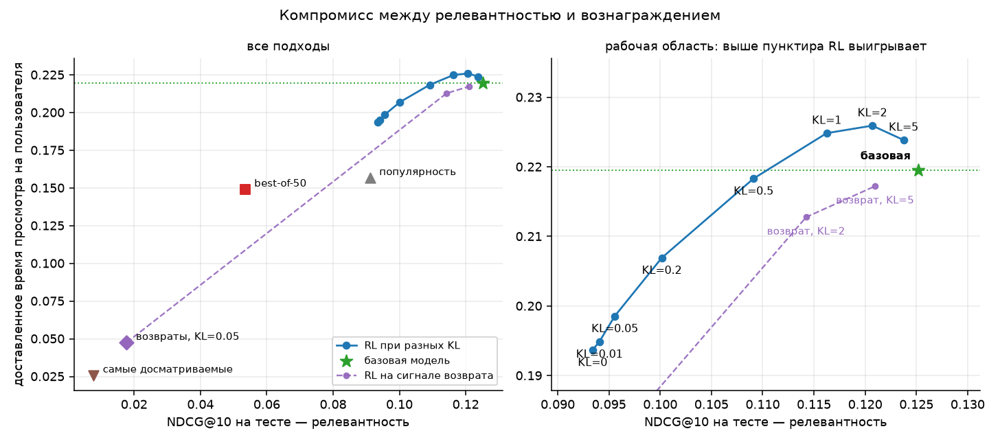
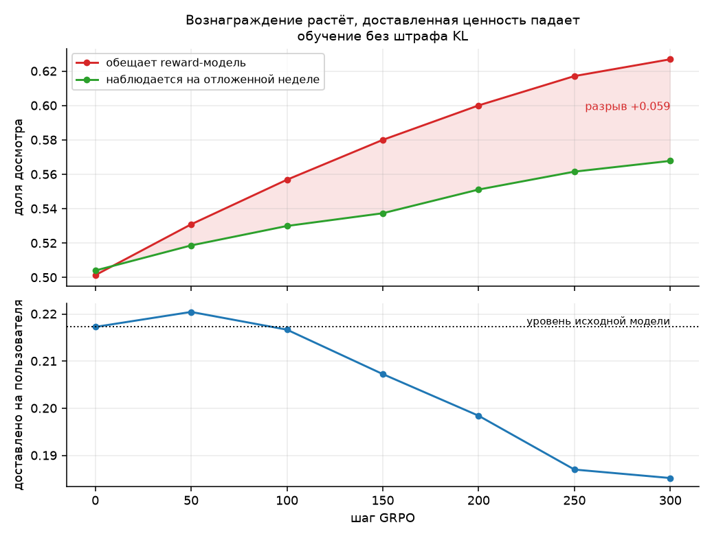
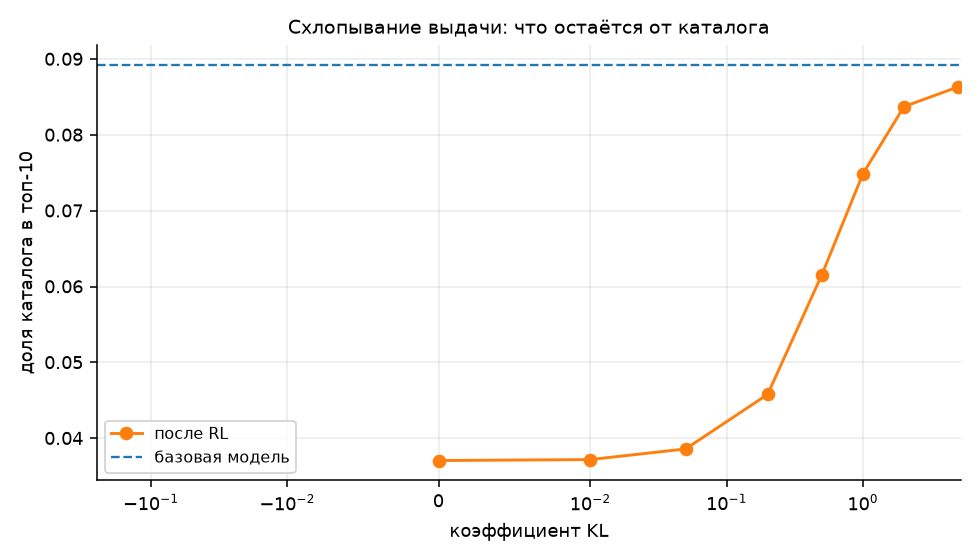
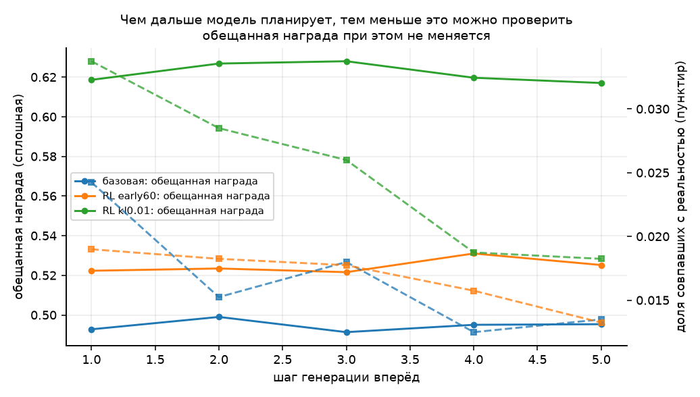

Отчёт по заданию T-Lab 2026, RecSys, задание 2. Датасет — KION от МТС.
Базовая модель — GPT-2 (2.8 млн параметров) на next item prediction по KION, токены это идентификаторы контента. Две модели вознаграждения: доля досмотра и возврат пользователя в течение недели. Дообучение — GRPO со штрафом KL к замороженной исходной политике. Разбиение по времени, тестовые две недели читаются один раз, шесть автотестов на утечки.
Главный результат: максимизировать вознаграждение легко, и именно это опасно. Наивная оптимизация поднимает предсказанное вознаграждение на 25% и при этом снижает реально доставленное время просмотра на 12%. Полезный режим существует, но он узкий, и находится там, где штраф KL на два порядка сильнее принятого в RLHF.
Итог на тесте, 20 000 пользователей:
| подход | NDCG@10 | обещанная награда | доставлено на пользователя |
|---|---|---|---|
| RL, KL = 2 | 0.1207 | 0.555 | 0.2259 (+2.9%) |
| RL, KL = 5 | 0.1237 | 0.531 | 0.2239 |
| базовая GPT-2 | 0.1252 | 0.503 | 0.2195 |
| RL, KL = 0 | 0.0934 | 0.630 | 0.1937 (−12%) |
| популярность | 0.0911 | 0.507 | 0.1568 |
| best-of-50 по вознаграждению | 0.0534 | 0.670 | 0.1491 (−32%) |
| RL на сигнале возврата | 0.0177 | 0.633 | 0.0475 (−78%) |
| десять самых досматриваемых | 0.0077 | 0.779 | 0.0258 (−88%) |
Таблица читается снизу вверх: чем выше обещанное вознаграждение, тем ниже доставленная ценность. Оптимум модели вознаграждения — это список-константа из десяти позиций, одинаковый для всех.
Шесть вещей, которые стоит прочитать, даже если дальше читать не хочется.
1. Наивная метрика врёт, и я поймал это на себе. Среднее вознаграждение по попавшим рекомендациям росло всё обучение — с 0.504 до 0.568, выглядело как успех. Но его знаменатель сокращается вместе с числом попаданий, с 2586 до 1957: политика, рекомендующая мало, но «безопасно», выглядит лучше, чем она есть. С фиксированным знаменателем — доставлено на пользователя — та же кривая растёт до 50-го шага, а потом падает на 15%.
2. Взлом reward-модели измерен, а не заявлен. Разрыв между обещанным и наблюдаемым вознаграждением вырос с −0.003 в начале до +0.059 к 300-му шагу, монотонно. Видно это только потому, что наблюдаемое считается на отложенных данных; по тому числу, которое оптимизирует RL, кривая выглядит ровным успехом до самого конца.
3. Схлопывание было предсказано до эксперимента. Диагностика показала, что 70% дисперсии модели вознаграждения объясняется айтемом и лишь 30% — персонализацией. Отсюда следовало, что политика поедет к глобально досматриваемому контенту. Покрытие каталога упало с 8.9% до 3.7%.
4. Стандартные для RLHF коэффициенты KL здесь занижены на два порядка. Весь диапазон 0.01–0.1 лежит в области схлопывания. Рабочая область — от 1 до 5. Причина структурная: у языковой модели уйти далеко мешает сама грамматика, у рекомендателя любой из 15 706 айтемов — допустимое продолжение.
5. Тривиальное переранжирование оказалось хуже RL, а не лучше. Я ожидал обратного. Best-of-50 по модели вознаграждения поднимает обещанную награду выше любого прогона RL и при этом роняет NDCG на 57%. Ценность RL здесь не в оптимизации вознаграждения — она в том, что штраф KL даёт регулируемый способ забрать часть выигрыша, не уходя далеко.
6. Сигнал, который хорошо предсказывается, не обязан хорошо оптимизироваться. Сигнал «вернулся за неделю» независим от доли досмотра (корреляция −0.002) и персонализируется в десять раз лучше — казалось бы, идеальная цель для RL. Первый прогон против него обрушил NDCG в семь раз, и я записал это как катастрофу. При перепроверке выяснилось, что штраф KL был взят из зоны схлопывания; при рабочем KL обвала нет (NDCG 0.1287 против базовых 0.1331), но нет и пользы — доставленная ценность ниже исходной при любом штрафе. Причина в том, что возврат определяется активностью самого пользователя, а не рекомендацией, и градиент политики от такого сигнала не получает направления. Это проверяемо до запуска обучения: у награды-досмотра 70% разброса приходилось на айтем, и политике было за что тянуть; у возврата основной источник разброса — пользователь.
Задание предлагает три шага: обучить GPT-2 на next item prediction, построить модель вознаграждения, дообучить рекомендатель с помощью RL — и разобраться, что при этом происходит с поведением модели.
Главная сложность не в том, чтобы поднять предсказанное вознаграждение. Поднять его легко. Сложность в том, чтобы отличить настоящее улучшение от эксплуатации ошибок модели вознаграждения, и чтобы это отличие было измерено, а не заявлено. Вся конструкция этой работы построена вокруг такого измерения.
KION: 5 476 251 просмотр, 15 706 единиц контента, 962 179 пользователей, период
с 13 марта по 22 августа 2021 года. Токены — идентификаторы айтемов, плюс два
служебных (PAD, BOS), итого словарь 15 708.
Разбиение по времени, одно и то же для всех этапов:
| часть | период | назначение |
|---|---|---|
| обучение | до 2 августа | базовая модель, обе reward-модели, промпты для RL |
| валидация | 2–9 августа | ранняя остановка, выбор коэффициента KL, наблюдение за RL |
| тест | 9–22 августа | единственный финальный замер |
Пользователей с историей не меньше пяти событий до 2 августа — 240 275; из них 58 813 имеют целевые события на валидационной неделе и 77 009 на тестовых.
Ограничение, которое стоит назвать сразу. Таймстемпы в KION дневные, и 30.2% пользовательских дней содержат больше одного события (в среднем 2.84). То есть примерно треть порядка внутри «последовательности» принципиально неизвестна. Внутри дня события упорядочены по идентификатору айтема — это воспроизводимо, но произвольно. Для последовательной модели это существенный шум, и его надо держать в уме при чтении любых цифр ниже.
Второе свойство датасета, меняющее постановку. В таблице взаимодействий ровно одна строка на пару (пользователь, айтем): повторных просмотров нет вообще. Поэтому классический способ взлома reward-модели — «рекомендовать уже знакомое, оно точно понравится» — здесь невозможен, и уже просмотренное исключается из ранжирования как гарантированно неверное. Ломаться модель будет иначе, и как именно — отдельный вопрос этой работы.
В последовательных моделях утечка прячется тише, чем в признаковых пайплайнах:
целевой айтем может попасть в собственный контекст, reward-модель может увидеть
то самое событие, отклик на которое предсказывает, а промпты для RL могут
оказаться взяты из недель, отведённых под оценку. Все три случая проверяются
напрямую на тех тензорах, которые получает обучение
(tests/test_no_leakage.py, шесть тестов):
GPT-2 (GPT2LMHeadModel из transformers), 4 слоя, 4 головы, скрытая
размерность 128, контекст 32 айтема, 2.8 млн параметров. Обучение — обычный
причинный языковой лосс, батчи собираются по длине истории, потому что медиана
длины 9, и паддинг до 32 стоил бы втрое дороже.
Доля досмотра. Предсказывает watched_pct / 100 для пары (история,
кандидат). Трансформерный ствол читает историю, последнее скрытое состояние
соединяется с эмбеддингом кандидата, и их поэлементное произведение подаётся в
голову — ответ зависит от совпадения истории и кандидата, а не от каждого по
отдельности.
Рядом измеряются два baseline'а, и это не формальность. Если модель не обходит «среднее по айтему», значит она выучила не отклик пользователя, а популярность айтема под другим именем, и весь дальнейший RL оптимизировал бы не то, что заявлено.
Возврат в сервис. Вторая модель предсказывает другой сигнал: было ли у пользователя хоть одно событие в течение семи дней после этого. Это не удержание в строгом смысле, а его офлайн-прокси, но единственный долгосрочный вопрос, на который дневные таймстемпы KION отвечают честно.
GRPO. Для каждого контекста политика сэмплирует группу из восьми кандидатов, reward-модель их оценивает, преимуществом каждого служит его награда минус среднее по собственной группе, нормированное на разброс внутри группы. Критик не нужен — на ноутбуке это решающее соображение.
Штраф KL считается к замороженной стартовой политике и по всему распределению айтемов, а не только по сэмплированным: вся тревога как раз в том, что масса тихо перетекает к десятку популярных позиций, и по сэмплам это видно хуже. Коэффициент KL — главный исследуемый параметр.
Прежде чем что-либо оптимизировать, стоит понять, что именно оптимизируется. Модель доли досмотра сравнивается с двумя baseline'ами на валидационной неделе (200 000 примеров):
| предсказатель | MAE | RMSE | Spearman | AUC (досмотр ≥ 0.5) |
|---|---|---|---|---|
| среднее по всем событиям | 0.3753 | 0.4028 | — | 0.500 |
| среднее по айтему, сглаженное | 0.3332 | 0.3771 | +0.352 | 0.674 |
| обученная модель | 0.3225 | 0.3716 | +0.372 | 0.683 |
Модель обходит справочник «среднее по айтему» всего на 0.02 по Spearman и на 0.009 по AUC. Это заставляет задать прямой вопрос: а есть ли в ней персонализация вообще, или это тот же справочник с лишними шагами?
Ответ — есть, но немного. Разложение предсказаний на валидации:
| показатель | значение |
|---|---|
| корреляция предсказаний со справочником по айтему | 0.878 |
| разброс предсказаний между айтемами | 0.159 |
| разброс предсказаний для одного айтема между пользователями | 0.069 |
| доля персонализации в общем разбросе | 30% |
| Spearman остатка (предсказание минус справочник) с остатком отклика | +0.131 |
Последняя строка важнее остальных. Если бы модель была чистым справочником, остаток после вычитания средней по айтему не предсказывал бы ничего, и Spearman остатка был бы около нуля. Он равен +0.131 — персонализация настоящая, просто её примерно втрое меньше, чем общей «досматриваемости» контента.
Из этого следует проверяемое предсказание о том, что сделает RL. Если 70% сигнала вознаграждения — это свойство айтема, а не пары, то политика, максимизирующая это вознаграждение, будет двигаться не в сторону лучшей персонализации, а в сторону глобально досматриваемого контента: то есть схлопываться к узкому набору позиций, одинаковому для всех. Персонализирующая треть даст слабый противоток.
Предсказание сформулировано до запуска RL; что с ним стало — в разделе результатов.
Доля досмотра — сигнал внутри одного контакта. О том, останется ли человек в сервисе, он не говорит ничего, и это не предположение, а измеримый факт. На тех же данных корреляция между «досмотрел не меньше половины» и «вернулся в течение семи дней» составляет 0.097.
Два почти независимых сигнала означают, что максимизация доли досмотра не приближает к долгосрочной цели сама по себе: она движет модель вдоль оси, почти ортогональной удержанию. Поэтому обучена вторая модель вознаграждения — на событие «у пользователя была хоть одна активность в следующие семь дней». Базовая частота такого события 64.7%.
Это, разумеется, прокси, а не удержание: событие через неделю могло случиться по множеству причин, не связанных с конкретной рекомендацией, и офлайн отличить их нельзя. Что здесь действительно проверяемо — изменится ли поведение политики, если вести её по другому сигналу. Что требует онлайна — вопрос о том, вырастет ли удержание на самом деле.
Прогон без KL-штрафа, 300 шагов GRPO, 6000 пользователей валидации:
| шаг | NDCG@10 | покрытие | предсказанная награда | наблюдаемая | попаданий | награда на пользователя |
|---|---|---|---|---|---|---|
| 0 | 0.1331 | 0.065 | 0.5014 | 0.5041 | 2586 | 0.2172 |
| 50 | 0.1297 | 0.063 | 0.5309 | 0.5187 | 2550 | 0.2204 |
| 100 | 0.1240 | 0.056 | 0.5569 | 0.5300 | 2453 | 0.2167 |
| 200 | 0.1089 | 0.039 | 0.6001 | 0.5511 | 2160 | 0.1984 |
| 300 | 0.0963 | 0.024 | 0.6269 | 0.5678 | 1957 | 0.1852 |
Максимизировать вознаграждение удаётся без труда: предсказанное выросло с 0.501 до 0.627. Наблюдаемое на отложенной неделе тоже выросло — с 0.504 до 0.568. На этом месте обычно и заканчивают, объявляя успех.
Но это смещённая метрика, и смещение здесь принципиальное. Наблюдаемое вознаграждение считается только по тем рекомендациям, которые пользователь действительно посмотрел. Чем сильнее политика схлопывается, тем меньше у неё попаданий — с 2586 до 1957, на четверть, — и тем более отобранным становится подмножество, по которому берётся среднее. Политика, рекомендующая мало, но «безопасно», выглядит лучше, чем она есть.
Знаменатель надо фиксировать. Награда на пользователя — сумма досмотренного по всем попаданиям, делённая на число пользователей, — ведёт себя иначе: она растёт до 50-го шага (0.2204 против 0.2172, +1.5%), а затем монотонно падает до 0.1852, то есть на 15% ниже исходной модели.
Вывод, который из этого следует: RL здесь не повышает полезность рекомендаций, а перераспределяет её. Модель начинает показывать контент, который досматривают лучше, но попадает в интересы реже, и теряет на попаданиях больше, чем выигрывает на досматриваемости. Узкое окно, где выигрыш реален, лежит около полусотни шагов, то есть до того, как успевает развиться схлопывание.
Разрыв между тем, что reward-модель обещает, и тем, что наблюдается:
| шаг | обещано | наблюдается | разрыв |
|---|---|---|---|
| 0 | 0.5014 | 0.5041 | −0.003 |
| 50 | 0.5309 | 0.5187 | +0.012 |
| 150 | 0.5800 | 0.5374 | +0.043 |
| 300 | 0.6269 | 0.5678 | +0.059 |
В начале reward-модель откалибрована — предсказанное и наблюдаемое совпадают с точностью до третьего знака. К концу она переоценивает собственные рекомендации на 0.059, и разрыв растёт монотонно. Это и есть количественная подпись эксплуатации: политика находит области, где модель вознаграждения ошибается в свою пользу, и уходит туда.
Заметить это можно только потому, что наблюдаемое вознаграждение измеряется на отложенных данных. Если смотреть на одно предсказанное вознаграждение — а именно его оптимизирует RL, — кривая выглядит как ровный успех до самого конца.
В разделе о reward-модели было сформулировано предсказание: раз 70% её сигнала определяется айтемом, а не парой, политика поедет не в сторону персонализации, а в сторону глобально досматриваемого контента.
Так и вышло. Покрытие каталога упало с 6.5% до 2.4%, то есть к концу обучения вся выдача на шесть тысяч пользователей умещается в 370 с небольшим айтемов из 15 706. Модель всё меньше отвечает на вопрос «что подойдёт этому человеку» и всё больше — на вопрос «что вообще хорошо досматривают».

Компромисс между релевантностью и доставленной ценностью. Справа увеличена рабочая область: выше пунктира RL выигрывает у базовой модели.

Вверху — расхождение обещанного и наблюдаемого вознаграждения. Внизу — доставленная ценность: растёт до 50-го шага, затем падает ниже исходной.

Какая доля каталога остаётся в выдаче при разном штрафе KL.

При генерации вперёд обещанная награда не меняется, а доля совпавшего с реальностью падает вдвое.
Коэффициент KL оказался не настройкой, а главным параметром задачи. Итог на тесте, 20 000 пользователей (полная таблица — в разделе результатов):
| коэффициент KL | NDCG@10 | покрытие | доставлено на пользователя |
|---|---|---|---|
| базовая модель | 0.1252 | 0.089 | 0.2195 |
| 5 | 0.1237 | 0.086 | 0.2239 |
| 2 | 0.1207 | 0.084 | 0.2259 |
| 1 | 0.1162 | 0.075 | 0.2248 |
| 0.5 | 0.1091 | 0.062 | 0.2183 |
| 0.2 | 0.1002 | 0.046 | 0.2069 |
| 0.05 | 0.0956 | 0.039 | 0.1986 |
| 0 | 0.0934 | 0.037 | 0.1937 |
Кривая немонотонна и имеет максимум. Выше базовой модели по доставленной ценности поднимаются только прогоны с KL от 1 до 5; всё, что слабее, уходит и по релевантности, и по ценности одновременно.
Лучшая точка: +2.9% доставленного времени просмотра ценой −3.6% релевантности. Это честный, но скромный размен, и важно, что он вообще существует: наивная оптимизация того же вознаграждения даёт −12% ценности.
Прогон с KL = 2 повторён с четырьмя разными сидами:
| сид | NDCG@10 | доставлено на пользователя |
|---|---|---|
| 42 | 0.1207 | 0.2259 |
| 1 | 0.1204 | 0.2252 |
| 2 | 0.1209 | 0.2261 |
| 3 | 0.1208 | 0.2252 |
Размах по сидам 0.0009, прирост над базовой моделью 0.0061 — в семь раз больше. Эффект устойчив.
В работах по дообучению языковых моделей коэффициент KL обычно берут в диапазоне от 0.01 до 0.1. В этой задаче весь такой диапазон лежит глубоко в области схлопывания: при 0.05 покрытие падает с 8.9% до 3.9% каталога, а доставленная ценность — на 10%. Рабочая область начинается на два порядка выше.
Объяснение в структуре задачи. У языковой модели словарь в десятки тысяч токенов, но распределение следующего токена сильно ограничено грамматикой и смыслом — уйти далеко мешает сам язык. У рекомендателя ничто не мешает перенести всю массу на десяток «хорошо досматриваемых» позиций: любой айтем из 15 706 — синтаксически допустимое продолжение. Удерживать политику приходится почти исключительно штрафом, и поэтому он нужен на порядки сильнее.
Самый дешёвый способ поднять вознаграждение — не обучать ничего, а переранжировать: взять топ-50 базовой модели и отсортировать его reward-моделью. Я ожидал, что этот приём обесценит всю RL-часть.
Вышло наоборот. Best-of-50 поднимает предсказанное вознаграждение до 0.670 — выше, чем любой прогон RL, — но обрушивает NDCG с 0.1252 до 0.0534, то есть на 57%, и доставленную ценность до 0.1491, на 32% ниже базовой модели.
Это меняет интерпретацию всей работы. Ценность RL здесь не в самой оптимизации вознаграждения — оптимизировать его тривиально и это вредно. Ценность в том, что KL-штраф даёт регулируемый способ забрать часть выигрыша, не уходя далеко от исходной политики. Без такого ограничения любой метод, максимизирующий это вознаграждение, разрушает рекомендации.
Предельная точка того же направления — строка «самые досматриваемые»: показать всем один и тот же список из десяти наиболее досматриваемых позиций каталога. Предсказанное вознаграждение рекордное, 0.779, доставленная ценность — 0.0258, то есть в восемь раз ниже базовой модели. Оптимум модели вознаграждения находится ровно там, и чем ближе к нему, тем хуже рекомендации.
Помимо чисел, меняется состав выдачи:
| подход | доля сериалов | покрытие каталога |
|---|---|---|
| базовая модель | 0.32 | 0.089 |
| RL, KL = 2 | 0.24 | 0.084 |
| RL, KL = 0 | 0.16 | 0.037 |
| best-of-50 | 0.05 | 0.065 |
| самые досматриваемые | 0.00 | 0.001 |
Оптимизация доли досмотра систематически вытесняет сериалы, и причина проверяется прямо по данным:
| тип контента | событий | средняя доля досмотра | доля полных досмотров |
|---|---|---|---|
| фильмы | 4 137 134 | 51.2% | 38.2% |
| сериалы | 1 339 117 | 31.6% | 14.5% |
У сериала доля просмотра считается по эпизоду, и досматривают его в полтора раза реже. Модель вознаграждения это добросовестно выучила, а политика добросовестно этим воспользовалась — и стала рекомендовать то, что удобнее досматривать, а не то, что человек хочет смотреть. Никакой ошибки в reward-модели здесь нет: она права насчёт доли досмотра. Ошибка в том, что доля досмотра была назначена целью.
Это и есть ответ на вопрос «чем рекомендации дообученной модели отличаются от исходных» в наиболее конкретной форме, какую позволяют данные.
Задание спрашивает, что происходит, если генерировать несколько рекомендаций подряд, каждый раз добавляя сгенерированное в контекст. Ответ упирается в одну вещь: начиная со второго шага модель рассуждает об истории, которой не было. Пользователь не смотрел то, что ему порекомендовали на первом шаге — это пока только рекомендация.
Проверить сгенерированный шаг можно единственным честным способом: посмотреть, попал ли этот айтем в то, что пользователь действительно посмотрел на отложенной неделе. Эта доля и падает по мере удаления от реальности, тогда как оценка модели вознаграждения не меняется совсем.
| модель | шаг | обещанная награда | совпало с реальностью | разных айтемов |
|---|---|---|---|---|
| базовая | 1 | 0.4928 | 0.0243 | 1541 |
| базовая | 3 | 0.4914 | 0.0180 | 1577 |
| базовая | 5 | 0.4954 | 0.0135 | 1587 |
| RL, KL = 0.01 | 1 | 0.6187 | 0.0338 | 838 |
| RL, KL = 0.01 | 3 | 0.6281 | 0.0260 | 764 |
| RL, KL = 0.01 | 5 | 0.6171 | 0.0182 | 830 |
К пятому шагу проверяемость падает примерно вдвое у обеих моделей, а обещанная награда держится на том же уровне до третьего знака. Модель вознаграждения никак не сигнализирует, что работает по выдуманному контексту: она одинаково уверенно оценивает и первый шаг, где контекст настоящий, и пятый, где четыре из последних пяти событий модель придумала сама.
Практическое следствие для RL: если строить вознаграждение по многошаговым траекториям — а это естественный способ учесть долгосрочность, — то оптимизация будет вестись по числу, которое на дальних шагах не проверяется ничем. Накопление ошибки здесь не шумное, а молчаливое, и обнаружить его по самому вознаграждению невозможно.
Отдельно стоит отметить строку с числом разных айтемов: схлопнувшаяся политика (KL = 0.01) выдаёт вдвое меньше различных позиций на каждом шаге, 838 против 1541, и это не выправляется с глубиной генерации.
Доля досмотра — сигнал внутри одного контакта. Задание спрашивает, можно ли сформулировать вознаграждение, поощряющее возвращение пользователя.
На KION для этого есть ровно один честно считаемый офлайн-сигнал: была ли у пользователя хоть одна активность в течение семи дней после события. Базовая частота 64.4%. Корреляция этого сигнала с «досмотрел не меньше половины» на полных данных составляет −0.002, то есть они статистически независимы.
Это само по себе содержательный результат: максимизация доли досмотра не приближает к удержанию, потому что движет модель вдоль оси, ортогональной ему. Любые рассуждения вида «будем оптимизировать досматриваемость, и люди станут возвращаться» на этих данных не подтверждаются.
Модель, предсказывающая возврат, при этом получилась лучше модели досмотра по одному важному признаку — она действительно персонализирована:
| модель вознаграждения | превосходство над справочником «среднее по айтему» |
|---|---|
| доля досмотра | AUC 0.683 против 0.674 (+0.009) |
| возврат за 7 дней | AUC 0.687 против 0.598 (+0.089) |
То есть возврат в десять раз сильнее зависит от пары «пользователь — айтем», а не от одного айтема. Казалось бы, это лучший кандидат в цель для RL.
Результат оказался противоположным ожиданию — но не так, как я решил сначала. Первый прогон RL против модели возвратов делался при KL = 0.05 и обрушил NDCG@10 с 0.1331 до 0.0194, в семь раз. Это выглядело как доказательство того, что сигнал возврата непригоден в принципе.
Вывод оказался неверным, и ошибка была моя. Из свипа по KL уже было известно, что 0.05 для награды-досмотра лежит глубоко в зоне схлопывания; сравнивать сигналы при таком штрафе — значит сравнивать не сигналы, а степень разрегулированности. Прогон повторён при тех KL, которые для первой награды оказались рабочими:
| штраф KL | NDCG@10 | покрытие | доставлено на пользователя |
|---|---|---|---|
| базовая модель | 0.1331 | 0.065 | 0.2172 |
| 0.05 | 0.0194 | 0.059 | 0.0455 |
| 2 | 0.1211 | 0.070 | 0.2082 |
| 5 | 0.1287 | 0.067 | 0.2142 |
При правильном штрафе никакой катастрофы нет: NDCG 0.1287 против 0.1331 у исходной модели. Зато видно главное, и оно устойчиво: сигнал возврата не ломает модель, но и не помогает ей. При любом KL доставленная ценность остаётся ниже базовой — 0.2082 и 0.2142 против 0.2172, — тогда как награда-досмотр при KL = 2 её превышала (0.2225).
Показательна и строка покрытия: при KL = 2 оно равно 0.070, то есть выше, чем у исходной модели. Схлопывания нет вовсе. Это согласуется с объяснением: «вернётся ли пользователь в течение недели» — свойство преимущественно пользователя, а не рекомендации. Модель хорошо предсказывает возврат, потому что считывает из истории, насколько человек вообще активен. Но политика от такого сигнала не получает направления: почти любая рекомендация активному пользователю оценивается высоко, а неактивному низко, и градиент вырождается. Никаких конкретных айтемов сигнал не выделяет — отсюда и отсутствие схлопывания, и отсутствие пользы.
Сигнал, который хорошо предсказывается, не обязан быть сигналом, который хорошо оптимизируется. Для RL нужна не точность модели вознаграждения, а её чувствительность к тому, чем политика может управлять. Проверить это можно до запуска обучения: достаточно посмотреть, какая доля разброса предсказаний объясняется айтемом, а какая — пользователем. Для награды-досмотра на айтем приходилось 70% разброса, и политика нашла, за что тянуть. Для возврата основной источник разброса — сам пользователь, и тянуть оказалось не за что.
Офлайн проверяется: меняется ли состав выдачи, падает ли релевантность, схлопывается ли каталог, растёт ли разрыв между обещанным и наблюдаемым вознаграждением. Всё это сделано выше.
Офлайн не проверяется главное: вырастет ли удержание на самом деле. Сигнал «вернулся через неделю» фиксирует корреляцию, а не следствие рекомендации — человек мог вернуться по десятку причин, никак с ней не связанных. Разделить их можно только онлайн-экспериментом с разделением трафика и достаточно долгим горизонтом наблюдения, потому что эффект на удержание проявляется на масштабе недель, а не одного сеанса.
Дневные таймстемпы. 30.2% пользовательских дней содержат больше одного события, в среднем 2.84. То есть примерно треть порядка внутри «последовательности» неизвестна, и внутри дня события упорядочены произвольно. Для последовательной модели это ощутимый шум, и часть потолка качества базовой модели объясняется именно им, а не архитектурой.
Размер модели. GPT-2 на 2.8 млн параметров, контекст 32 айтема, обучение на процессоре. Это сознательный выбор под доступное железо, а не оптимум. Более крупная модель дала бы более высокий старт, и не факт, что выводы про RL перенеслись бы без изменений: чем лучше базовая политика, тем, вероятно, больше ей есть что терять.
Один датасет и один домен. Все выводы получены на KION. Отсутствие повторного потребления — структурная особенность именно этой выгрузки, и на музыкальном датасете, где повторы составляют основную массу событий, типичный способ взлома reward-модели был бы совсем другим.
Reward-модель посредственная. Spearman 0.372 на отложенной выборке и превосходство над справочником по айтему всего на 0.02. Часть эффектов, описанных как «взлом», может оказаться просто следствием её слабости. Проверить это можно было бы более сильной моделью вознаграждения, и это первое, что стоит сделать дальше.
Горизонт возврата выбран произвольно. Семь дней взяты как разумный срок, но ни трое суток, ни две недели не проверялись. Вывод о независимости досмотра и возврата получен при одном значении горизонта.
RL короткий. 300 шагов GRPO с батчем 64, то есть политика видела порядка 20 000 контекстов из 240 000 доступных. Более длинное обучение при большом KL могло бы сместить оптимум; при малом KL, судя по траекториям, оно лишь усугубило бы схлопывание.
Доверительные интервалы не считались. Устойчивость ключевого результата проверена разбросом по четырём сидам (размах в семь раз меньше эффекта), но парный бутстрэп по пользователям, как в первом задании, здесь не делался.
python -m venv .venv && . .venv/bin/activate # python 3.12
pip install -r requirements.txt
./run_all.sh
Полный прогон на восьмиядерном процессоре занимает около двух с половиной часов, из них примерно 35 минут — базовая модель, по 15 минут каждая из двух моделей вознаграждения, по 2–3 минуты на прогон RL.
Отдельные шаги:
python scripts/prepare_sequences.py # события -> последовательности, словарь
python tests/test_no_leakage.py # шесть тестов на утечки
python scripts/train_sft.py --epochs 4 # базовая GPT-2
python scripts/train_reward.py # вознаграждение: доля досмотра
python scripts/diagnose_reward.py # сколько в ней персонализации
python scripts/train_return_reward.py # вознаграждение: возврат за 7 дней
python scripts/train_rl.py --kl 2.0 # GRPO
python scripts/evaluate_all.py # единственный скрипт, читающий тест
python scripts/analyze_rollout.py # многошаговая генерация
python scripts/make_figures.py && python scripts/make_report.py
Данные берутся из подготовленного parquet первого задания
(../tlab-recsys/data); если его нет, scripts/prepare_sequences.py ожидает
events.parquet и items.parquet в каталоге data.
src/rlrec/
config.py даты разбиения, размер контекста, служебные токены
data.py последовательности, окна обучения, примеры для reward-моделей
model.py GPT-2-политика и модель вознаграждения
rl.py GRPO: группа кандидатов, преимущество, KL ко всему распределению
evaluate.py ранжирующие метрики, метрики каталога, доставленная ценность
scripts/ по одному на каждый этап
tests/ шесть тестов на утечки
runs/ результаты прогонов в JSON и чекпойнты
reports/ рисунки и разделы отчёта